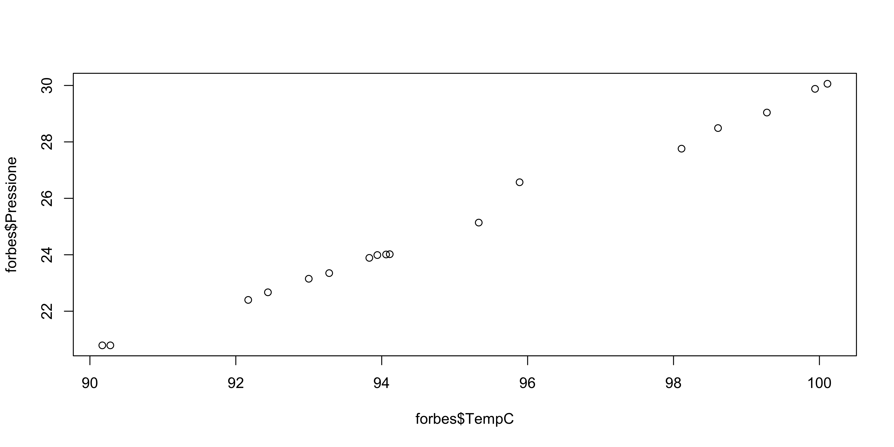
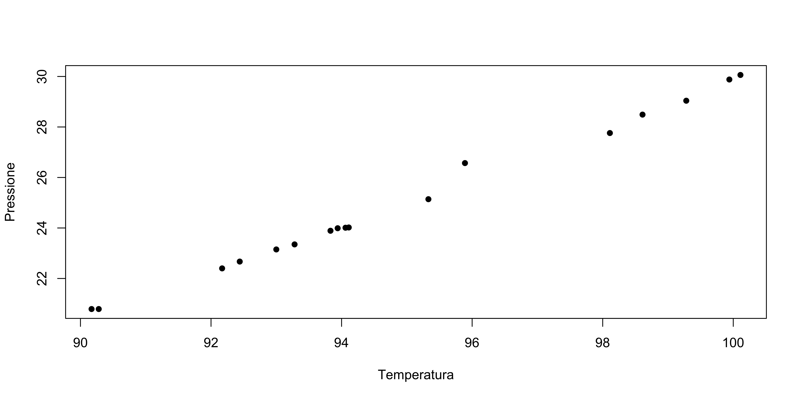

R per l’analisi statistica multivariata
Unità F: analisi descrittiva dei dati forbes
Università degli Studi di Milano-Bicocca
Argomenti affrontati
- Svolgimento di un tema d’esame di Statistica I
- Modello di regressione lineare semplice
Nota
Gli esercizi R associati sono disponibili a questo link
Descrizione del problema
Per n = 17 luoghi nelle Alpi viene misurata la pressione atmosferica (inHg, ovvero “inches of mercury”) e la temperatura di ebollizione dell’acqua (in gradi Fahrenheit).
I dati provengono da un esperimento condotto dal fisico scozzese Forbes nel 1857.
Forbes era interessato a stimare l’altitudine tramite la pressione. Tuttavia, il barometro all’epoca era uno strumento pesante e costoso.
In montagna infatti l’acqua bolle ad una temperatura diversa, per cui è possibile cercare di stimare la pressione a partire dalla temperatura di ebollizione.
Nota
I dati seguenti sono gli stessi dell’esame di Statistica I del 11 Novembre 2020, che trovate sul sito web.
Importazione dei dati forbes
Come fatto in precedenza, anzitutto è necessario scaricare il file forbes.csv e salvarlo nel proprio computer. Link al file
In alternativa, possiamo semplice ottenerli usando il link:
Operazioni preliminari
Per motivi interpretativi, convertiamo la temperatura da gradi Farenheit a gradi Celsius, ricordando che
(\text{``Fahrenheit''}) = 32 + \frac{9}{5}(\text{``Celsius''}).
colnames(forbes) <- c("TempF", "Pressione") # Cambio i nomi alle variabili
forbes$TempC <- round((forbes$TempF - 32) * 5 / 9, 2) # Da Fahrenheit a Celsius
summary(forbes) TempF Pressione TempC
Min. :194.3 Min. :20.79 Min. : 90.17
1st Qu.:199.4 1st Qu.:23.15 1st Qu.: 93.00
Median :201.3 Median :24.01 Median : 94.06
Mean :203.0 Mean :25.06 Mean : 94.97
3rd Qu.:208.6 3rd Qu.:27.76 3rd Qu.: 98.11
Max. :212.2 Max. :30.06 Max. :100.11 Come mai approssimiamo i valori utilizzando round? Per motivi estetici: in questo modo si ottengono risultati identici alla prova d’esame di Statistica I.
Istogramma
Domanda 1
Si disegni un istogramma della variabile temperatura, scegliendo un numero appropriato di classi equispaziate e giustificandone la scelta.
Si aggiungano a questi grafici gli “abbellimenti” grafici ritenuti necessari (nomi delle variabili, titolo, etc).
Soluzione
Possiamo decidere di specificare in autonomia gli intervalli delle classi oppure di lasciare ad R questa scelta.
par(mfrow = c(1, 2)) # Divido la finestra grafica in 2 parti
# Opzione 1, per un totale di 6 classi equispaziate
hist(forbes$TempC) # Equivalente a: hist(forbes$TempC, breaks = "sturges")
# Opzione 2, definisco manualmente 5 classi equispaziate
breaks <- c(90, 92.5, 95, 97.5, 100, 102.5)
hist(forbes$TempC, breaks = breaks)La soluzione di sinistra fa uso di 6 classi. Viceversa, quella di sinistra fa uso di 5 classi, come nella soluzione dell’esame.
Indici di posizione
Domanda 2
Si ottengano la media aritmetica di entrambe le variabili tempC e pressione. Quanto vale la temperatura di ebollizione media espressa in gradi Fahrenheit? Si risponda senza calcolare tutti i valori della variabile tempF.
Soluzione
Abbiamo già calcolato la medie tramite il comando summary, per completezza:
[1] 202.9524[1] 202.9529Esercizio
Come mai le medie calcolate nella seconda parte differiscono leggermente? A cosa può essere dovuto?
Indici di variabilità
Domanda 3
Si ottenga la varianza delle variabili tempC e pressione.
Soluzione
Dato che tornerà utile in seguito, definiamo la funzione my_var che calcola la varianza.
# Si, la funzione è definita in un'unica riga e non c'è nulla di male in questo
my_var <- function(x) mean(x^2) - mean(x)^2
# Calcolo delle due varianze
my_var(forbes$TempC)[1] 9.630811[1] 8.584575Esercizio
Si ottengano i momenti secondi delle variabili tempC e pressione.
Covarianza e correlazione
Domanda 4
Si disegni un opportuno grafico che aiuti a comprendere la relazione tra le due variabili. Si calcoli quindi la correlazione.
Soluzione
Per la prima parte della domanda, abbiamo bisogno del nuovo comando plot, che può essere usato (tra le altre cose!) per costruire un diagramma a dispersione.
Forniamo due versioni dello stesso grafico; la seconda contiene dei miglioramenti estetici.


È quindi evidente che i dati siano circa (anche se non perfettamente) allineati
Per la seconda parte di domanda (correlazione), dobbiamo anzitutto ottenere la covarianza tra due variabili.
La covarianza tra due insiemi di dati x_1,\dots,x_n e y_1,\dots,y_n è definita come
\text{cov}(x,y) = \frac{1}{n}\sum_{i=1}^n(x_i - \bar{x})(y_i - \bar{y}) = \frac{1}{n}\sum_{i=1}^nx_i y_i - \bar{x}\bar{y}.
Definiamo quindi la funzione my_cov, che calcola appunto la covarianza:
my_cov <- function(x, y) mean(x * y) - mean(x) * mean(y)
my_cov(forbes$TempC, forbes$Pressione) # = my_cov(forbes$Pressione, forbes$TempC)[1] 9.067404In R esiste anche il comando cov che, come nel caso della varianza, divide la sommatoria per (n - 1) e non n per motivi legati all’inferenza statistica:
[1] 9.634117L’indice di è definito come: \rho = \frac{\text{cov}(x,y)}{\sqrt{\text{var}(x) \text{var}(y)}}.
Pertanto, possiamo calcolare la correlazione nei modo seguente:
[1] 0.9972227[1] 0.9972227Esercizio
Come mai i risultati dei due comandi coincidono? Si verifichi questo fatto svolgendo analiticamente (carta e penna) i conti.
In R esiste anche il comando cor, che permette di ottenere la correlazione
Modello di regressione lineare
Domanda 5
Si ottenga la retta ai minimi quadrati per la relazione tra tempC e pressione e la si disegni nel grafico ottenuto in precedenza.
Soluzione
Anzitutto ricordiamo che in un modello lineare del tipo y_i = \alpha + \beta x_i + \epsilon_i, le stime ai minimi quadrati sono pari a \hat{\alpha} = \bar{y} - \hat{\beta}\:\bar{x}, \qquad \hat{\beta} = \frac{\text{cov}(x,y)}{\text{var}(x)}.
Pertanto, possiamo calcolare la correlazione nei modo seguente:
# Coefficiente angolare
beta_hat <- my_cov(forbes$TempC, forbes$Pressione) / my_var(forbes$TempC)
# Intercetta
alpha_hat <- mean(forbes$Pressione) - mean(forbes$TempC) * beta_hat
c(alpha_hat, beta_hat)[1] -64.3587103 0.9414995Domanda 6
In base al modello stimato, se la temperatura di ebollizione dell’acqua è pari 97 gradi Celsius, a quanto è pari la pressione?
Soluzione
Utilizzando le stime ottenute, possiamo calcolare rapidamente i valori previsti:
[1] 20.37625 20.87177 21.36730 21.86283 22.35835 22.85388 23.34940 23.84493
[9] 24.34046 24.83598 25.33151 25.82703 26.32256 26.81809 27.31361 27.80914
[17] 28.30467 28.80019 29.29572 29.79124In particolare, quando tempC = 97 si ha che:
Domanda 7
Si ottenga un indice di bontà di adattamento ai dati della curva ottenuta.
Soluzione
Il coefficiente R^2 per un modello di regressione lineare semplice è definito come: R^2 = 1 - \frac{\text{var}(r)}{\text{var}(y)} = \rho^2, dove r_1,\dots,r_n sono i residui.
Anzitutto quindi calcoliamo i residui:
Il coefficiente R^2 può quindi essere ottenuto in due modi diversi:
Esercizio riassuntivo
Si consideri l’esame di Statistica I del 28 Gennaio 2021, disponibile a questo link
Si risolva l’esercizio 2 dell’esame usando il software R.
Suggerimento
Per poter importare piccole quantità di dati in R, è possibile usare il comando scan.